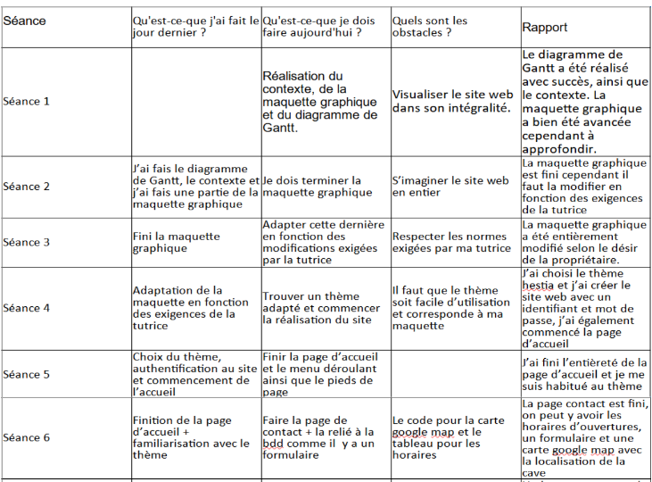
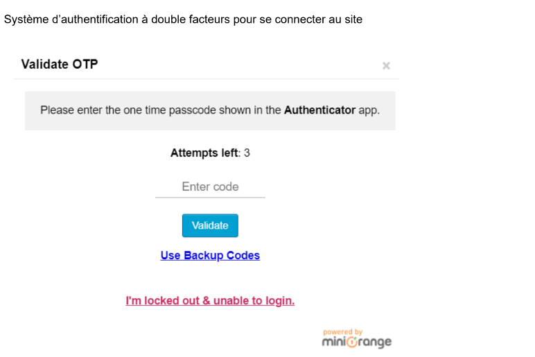

Mes Compétences
Au cours de mes deux années de BTS, j'ai acquis une variété de compétences techniques et professionnelles.
Voir mes compétences
Réalisations faites tout au long du BTS
PPE 1 Création d’un site à l’aide du CMS Wordpress.
PPE 1


PPE 2 Sécurisation et SEO du site Wordpress.
PPE 2


PPE 3 Utilisation de Boostrap afin de gérer une réservation en ligne.
PPE 3


PPE 4 Gestion des données dans une application Java avec NetBeans.
PPE 4


GLPI
GLPI
Paramétrage d’un serveur Debian
Serveur Debian
PPE Deuxième Année Application Mobile et Application web
PPE Deuxième Année Application Mobile et Application web

Réalisations en milieu professionnel en cours de première année
Création d’un site vitrine pour un particulier
Création d’un site vitrine pour un particulier
Sécurisation et gestion du SEO
Sécurisation et gestion du SEO
Réalisation d’une documentation utilisateur
Réalisation d’une documentation utilisateur
Sauvegarde et hébergement de mon site avec OVH
Sauvegarde et hébergement de mon site avec OVH
Réalisations en milieu professionnel en cours de seconde année
Création de requête Ajax
Création de requête Ajax
Mise en place du Webservice
• J'ai déployé un service en développement une API fonctionnel servant de page de test pour les futurs développeurs.
• J'ai déployé un service en développement une API fonctionnel servant de page de test pour les futurs développeurs.
• J'ai planifié mes activités durant le développement de l'API via la méthode Scrum
• J'ai exploité les données de l'entreprise notamment en interagissant avec la base de donnée pour faire en sorte de pouvoir rajouter des éléments à cette dernière.